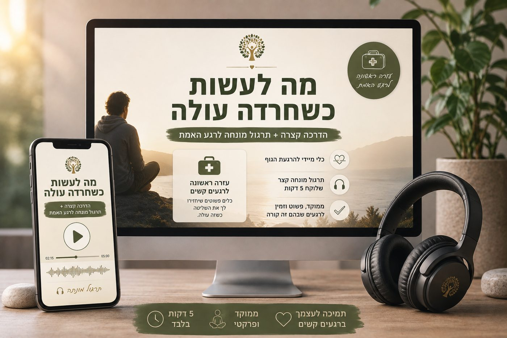
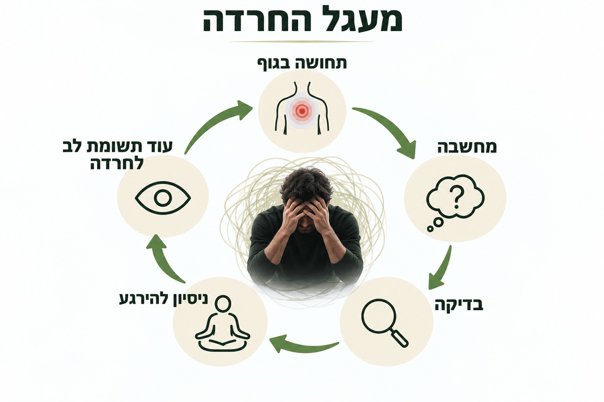
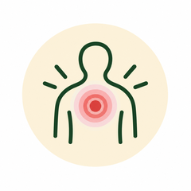
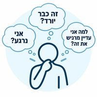
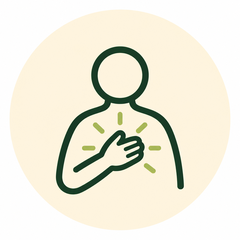
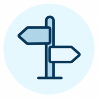

אם גם אצלך החרדה מתחילה מדופק, סחרחורת, או מחשבה אחת קטנה שמיד שולחת את הראש לסרט…
בהדרכה קצרה וממוקדת תדע מה לעשות בדקות הראשונות של החרדה, כדי לא להיכנס לסחרור גדול יותר.
- בלי להכריח את עצמך להירגע
- בלי להילחם בכל מחשבה
- בלי לזכור עשר טכניקות דווקא כשהראש שלך הכי מוצף
כולל תרגול מונחה שאפשר לחזור אליו גם ברגע האמת.

עזרה ראשונה לרגע שבו החרדה עולה — לא עוד קורס ארוך.
הרגע שאנחנו מדברים עליו
אולי אתה מכיר את הרגע הזה. פתאום משהו מתחיל. הדופק משתנה. יש תחושה בחזה. סחרחורת. מחשבה מפחידה. תחושה שמשהו לא בסדר.
ובתוך שניות אתה כבר לא רק מרגיש חרדה — אתה מתחיל לעשות משהו עם החרדה:
- לבדוק את הגוף
- לנסות להבין למה זה קורה
- לנשום בצורה מסוימת
- לבדוק אם זה כבר עובר
- לשכנע את עצמך שהכול בסדר
- לחפש סימן שאתה חוזר לעצמך
ולפעמים דווקא שם מתחיל הסיבוב שמגדיל את כל האירוע.

מה תלמד בהדרכה?

מה קורה בדקות הראשונות שבהן החרדה עולה
תבין למה לפעמים התחושה הראשונית היא רק החלק הראשון, ומה שקורה אחריה הוא זה שהופך אותה לאירוע הרבה יותר גדול.

לזהות את "מלכודת ההרגעה"
הרגע שבו אתה מתחיל לבדוק: "זה כבר יורד?", "אני נרגע?", "למה אני עדיין מרגיש את זה?" ותגלה למה דווקא המרדף אחרי ההקלה יכול להשאיר את תשומת הלב שלך נעולה על החרדה.

מה לעשות במקום להיכנס מיד למאבק
תקבל דרך פשוטה להגיב למה שקורה — בלי לנסות לנצח את הגוף, בלי להתווכח עם כל מחשבה, ובלי להפוך את ההרגעה לתנאי לכך שתוכל להמשיך.
תיוג · הסכמה · ויסות · פעולה

השאלה שמחזירה אותך מהחרדה אל החיים
במקום שכל תשומת הלב תהיה על "איך אני גורם לזה לעבור?" — נלמד להעביר את מרכז הכובד לשאלה אחרת: "מה הייתי רוצה לעשות עכשיו, גם אם החרדה נמצאת כאן?"
זו לא התעלמות מהחרדה. זו התחלה של מערכת יחסים אחרת איתה — לפעול למרות, כי כך החרדה היא לא מרכז החיים שלך, וכך מטרת חייך היא לא שלא תחווה חרדה.
תרגול מונחה לרגע שבו החרדה כבר שם
בסוף ההדרכה תקבל גם תרגול קצר שאפשר לחזור אליו ברגעים שבהם הכול מתחיל לעלות. המטרה שלו אינה "להעלים" את החרדה, אלא לעזור לך להתמצא במה שקורה, ליצור מעט מרחק מהבהלה סביב התחושה, ולבחור את הצעד הבא שלך.
למה יצרתי את ההדרכה הזאת?
יש היום המון מידע על חרדה. רוב האנשים שמתמודדים איתה כבר שמעו לפחות פעם אחת: "תנשום." "תחשוב חיובי." "תזכיר לעצמך שזה רק חרדה." "תנסה להירגע."
אבל ברגע האמת הבעיה היא לא תמיד שחסר לך עוד מידע. לפעמים הבעיה היא שכל המערכת שלך עסוקה בדבר אחד: לגרום לחרדה להיעלם לפני שתוכל להרגיש שוב בטוח. וככל שהמוח לומד שצריך קודם להיפטר מהתחושה כדי להמשיך בחיים — כך עצם הופעת החרדה יכולה להתחיל להרגיש יותר ויותר מאיימת.
לכן יצרתי את "מה לעשות כשהחרדה עולה" — כדי לתת לך נקודת התחלה אחרת. לא עוד מלחמה בחרדה, אלא דרך להתחיל להגיב אליה אחרת.
רוצה לדעת מה לעשות בפעם הבאה שהחרדה מתחילה לעלות?
מיד לאחר ההרשמה תקבל גישה ל"מה לעשות כשהחרדה עולה" — הדרכה קצרה + תרגול מונחה.
נרשמת בהצלחה
ההדרכה בדרך אליך למייל. אם היא לא מגיעה תוך כמה דקות, כדאי לבדוק גם בתיקיית הספאם.
בלי טלפון. בלי שאלון התאמה. ובלי צורך לדבר עם אף אחד כדי לקבל אותה.
אפשר ללמוד להגיב אחרת לחרדה
מי אני ולמה בניתי את התהליך הזה?
אם עוד לא יצא לנו להכיר, נעים מאוד. אני דוד אינגבר, מטפל רגשי כבר 6 שנים, עם מעל 1,300 שעות ליווי אחד על אחד בעבודה עם חרדה, טראומה, מחשבות טורדניות, חרדת בריאות והימנעויות.
אבל הגישה שלי לא נולדה רק מהקליניקה. היא התחילה גם ממני. לפני 6 שנים התחלתי לפחד מהתחושות שלי, מהמחשבות שלי, ובעיקר מהאפשרות שלא אצליח להתמודד כשהחרדה תעלה. רציתי לדעת איך לעזור לעצמי, אז הלכתי ללמוד LI-CBT. זה נתן לי כלים והבנה. אבל בשלב מסוים קלטתי משהו: הפכתי ללוחם טוב יותר, אבל עדיין חייתי בתוך מלחמה.
משם הגעתי ל-ACT, מיינדפולנס, NLP, טראנס ועבודה עם הגוף. המאבק פחת, אבל היה חסר לי החיבור למה שמתחת לחרדה. ואז התחבר לי החלק שהיה חסר: הורות עצמית מיטיבה. לא להיבלע בחרדה, אבל גם לא להילחם בה או להתעלם ממנה — אלא להבין: יש בי חלק שמפחד, אבל הוא לא כל מי שאני. ואם הוא לא כל מי שאני, יש בי גם חלק שיכול להקשיב לו, להרגיע אותו, להציב לו גבול, ועדיין לבחור איך לחיות.
משם חיברתי את כל מה שלמדתי למתודה אחת: "חוזרים לסמוך על עצמנו" — לא כדי ללמד אותך להילחם טוב יותר בחרדה, אלא כדי לעזור לך להבין אותה, לפגוש אותה אחרת, ולחזור לסמוך על עצמך גם כשהיא שם.